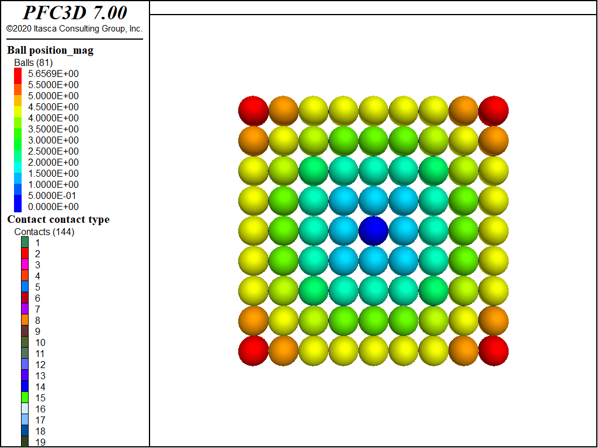
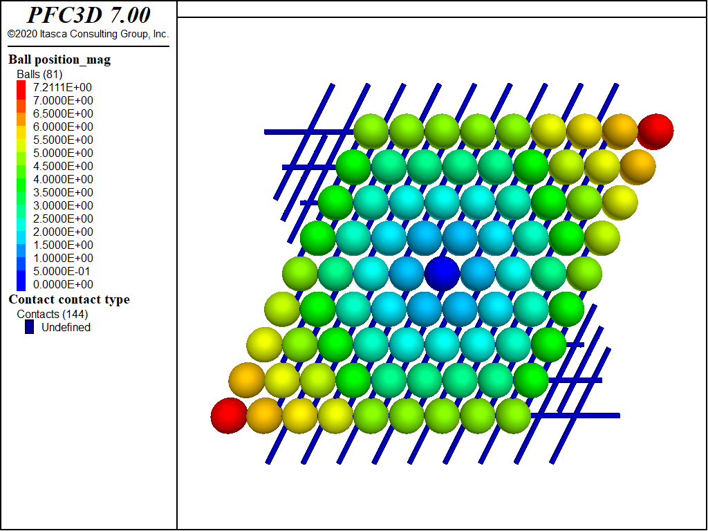
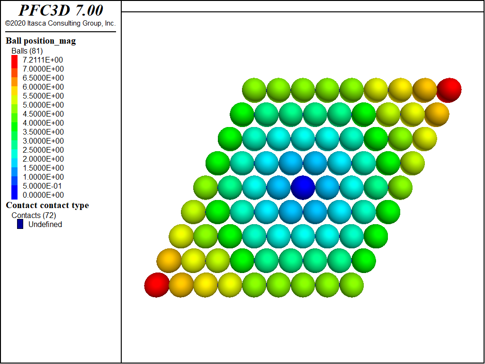

ball attribute 命令
语法
- ball attribute keyword ... <range>
主要关键字：
damp density displacement displacement-x displacement-y displacement-z 欧拉角（euler） x 向欧拉角（euler-x） y 向欧拉角（euler-y） z 向欧拉角（euler-z） force-applied force-applied-x force-applied-y force-applied-z force-contact force-contact-x force-contact-y 力接触 z（force-contact-z） 碎片（fragment） moment-applied 弯矩施加 x（moment-applied-x） 弯矩施加 y（moment-applied-y） 弯矩施加 z（moment-applied-z） moment-contact 弯矩接触 x（moment-contact-x） 弯矩接触 y（moment-contact-y） 弯矩接触 z（moment-contact-z） position position-x position-y position-z radius rotation spin 旋转 x（spin-x） 旋转 y（spin-y） 旋转 z（spin-z） velocity velocity-x velocity-y velocity-z
设置球颗粒属性的值。此命令是
ball initialize命令的同义词。各个属性可使用ball list命令列出，所有属性均可可视化。注意
- 如果修改后得到的球颗粒不能完全位于模型域内，则球颗粒几何形状的修改将失败。
- 球颗粒属性是球颗粒的特征，例如位置或尺寸。它们有别于球颗粒性质（使用
ball property命令赋值），后者是球颗粒的表面性质，用于填充接触模型的性质。
- damp f [modblock]
- density f [modblock]
球颗粒密度，其中 f > 0。默认情况下，创建球颗粒时球颗粒密度设为零； 要使 PFC 正确计算质量属性并对球颗粒的运动方程进行积分，需要采用非零值。 如果循环开始时模型中存在密度为零的球颗粒，则会抛出异常。
- displacement v [modblock]
循环计算后累积的球颗粒位移向量。
- displacement-x f [modblock]
循环计算后累积的球颗粒位移的 x 分量。
- displacement-y f [modblock]
循环计算产生的球颗粒累积位移的 y 分量。
- displacement-z f (3D ONLY) [modblock]
循环计算产生的球颗粒累积位移的 z 分量。
- euler v (3D ONLY) [modblock]
按 X、Y、Z 约定（即先绕 x 轴旋转、再绕 y’ 轴旋转、然后绕 z’‘ 轴旋转）表示的当前欧拉角方位，单位为度。 仅当已启用方位追踪时才会更新方位（请参阅 设置方向跟踪（
model orientation-tracking） 命令）。启用后，可对球颗粒的当前方位进行可视化。
- euler-x f (3D ONLY) [modblock]
当前球颗粒方位的 x 欧拉角（单位为度）。更多详情请参阅 euler 关键字。
- euler-y f (3D ONLY) [modblock]
当前球颗粒方位的 y 欧拉角（单位为度）。更多详情请参阅 euler 关键字。
- euler-z f (3D ONLY) [modblock]
当前球颗粒方位的 z 欧拉角（单位为度）。更多详情请参阅 euler 关键字。
- force-applied v [modblock]
施加于球颗粒的力。
- force-applied-x f [modblock]
施加于球颗粒的力的 x 分量。
- force-applied-y f [modblock]
施加于球颗粒的力的 y 分量。
- force-applied-z f (3D ONLY) [modblock]
施加于球颗粒的力的 z 分量。
- force-contact v [modblock]
在上一力-位移更新过程中累积到球颗粒上的接触力之和。 该值将在下一次力-位移更新过程中被修改。
- force-contact-x f [modblock]
接触力的 x 分量。
- force-contact-y f [modblock]
接触力的 y 分量。
- force-contact-z f (3D ONLY) [modblock]
接触力的 z 分量。
- fragment i
破碎块体 ID（参见“破碎块体（Fragment）”）。
- moment-applied x 向尺寸（fx ）y 向尺寸（fy ）z 向尺寸（fz ）(y- 和 z- 分量 为 3D ONLY) [modblock]
施加于球颗粒的力矩。
- moment-applied-x f (3D ONLY) [modblock]
施加于球颗粒的力矩的 x 分量。
- moment-applied-y f (3D ONLY) [modblock]
施加于球颗粒的力矩的 y 分量。
- moment-applied-z f (3D ONLY) [modblock]
施加于球颗粒的力矩的 z 分量。
- moment-contact x 向尺寸（fx ）y 向尺寸（fy ）z 向尺寸（fz ）(y- 和 z- 分量 为 3D ONLY) [modblock]
在上一力-位移更新过程中累积到球颗粒上的接触力矩之和。 该值将在下一次力-位移更新过程中被修改。
- moment-contact-x f (3D ONLY) [modblock]
接触力矩的 x 分量。
- moment-contact-y f (3D ONLY) [modblock]
接触力矩的 y 分量。
- moment-contact-z f (3D ONLY) [modblock]
接触力矩的 z 分量。
- position v [modblock]
球颗粒质心的位置。请注意，发出此命令后应对模型进行清理（参见 清理模型对象命令（
model clean） 命令），以确保 与相邻部件的潜在接触得到更新。
- position-x f [modblock]
球颗粒质心位置的 x 分量。
- position-y f [modblock]
球颗粒质心位置的 y 分量。
- position-z f (3D ONLY) [modblock]
球颗粒质心位置的 z 分量。
- radius f [modblock]
球颗粒半径，其中 f > 0。创建球颗粒时（使用
ball create、ball generate或ball distribute命令）要求半径为正。 此后可使用此命令修改球颗粒半径。请注意，发出此命令后应对模型进行清理（参见 清理模型对象命令（model clean） 命令），以确保 与相邻部件的潜在接触得到更新。
- rotation f (2D ONLY) [modblock]
球颗粒的当前方位。仅当已启用方位追踪时才会更新该方位（请参阅 设置方向跟踪（
model orientation-tracking） 命令）。
- spin x 向尺寸（fx ）y 向尺寸（fy ）z 向尺寸（fz ）(y- 和 z- 分量 为 3D ONLY) [modblock]
球颗粒角速度。
- spin-x f (3D ONLY) [modblock]
球颗粒角速度的 x 分量（单位为弧度）。
- spin-y f (3D ONLY) [modblock]
球颗粒角速度的 y 分量（单位为弧度）。
- spin-z f (3D ONLY) [modblock]
球颗粒角速度的 z 分量（单位为弧度）。
- velocity v [modblock]
球颗粒平动速度向量。
- velocity-x f [modblock]
球颗粒速度的 x 分量。
- velocity-y f [modblock]
球颗粒速度的 y 分量。
- velocity-z f (3D ONLY) [modblock]
球颗粒速度的 Z 分量。
ball attribute 关键字块
以下关键字可用于修改所提供的基本值。damp、density、displacement、displacement-x、displacement-y、displacement-z、欧拉角（euler）、x 向欧拉角（euler-x）、y 向欧拉角（euler-y）、z 向欧拉角（euler-z）、force-applied、force-applied-x、force-applied-y、force-applied-z、force-contact、force-contact-x、force-contact-y、力接触 z（force-contact-z）、moment-applied、弯矩施加 x（moment-applied-x）、弯矩施加 y（moment-applied-y）、弯矩施加 z（moment-applied-z）、moment-contact、弯矩接触 x（moment-contact-x）、弯矩接触 y（moment-contact-y）、弯矩接触 z（moment-contact-z）、position、position-x、position-y、position-z、radius、rotation、spin、旋转 x（spin-x）、旋转 y（spin-y）、旋转 z（spin-z）、velocity、velocity-x、velocity-y 以及 velocity-z。
用法示例
请注意区分 属性 与 性质！ 教程示例“属性与性质（Attributes and Properties）”详细讨论了这一问题。
典型用法
设置球颗粒密度
ball attribute 命令最典型的用法是设置先前创建的球颗粒的密度（若相关，还包括局部阻尼系数），如下例所示。
请注意，必须为系统中的每个球颗粒指定非零密度，否则 PFC 将在循环序列开始时抛出异常并停止。
; 设置模型域
model domain extent -10 10
model large-strain on
; 选择默认接触模型及其参数
contact cmat default model linear property kn 1e6
; 在盒子中生成随机球集合体
model random 10001
wall generate box -5 5 one-wall
ball generate id 1 500 box -4.5 4.5 radius 0.5
; 为已有球赋予密度和局部阻尼系数
ball attribute density 1000.0 damp 0.7
; 设置重力并求解系统
model gravity 10.0
model solve

设置初始条件
ball attribute 命令的另一种常见用法是设置初始条件。在以下示例中，
先生成一行球颗粒，然后为选定范围内的球颗粒赋予非零速度，而为其余球颗粒
赋予非零的外加力。请注意，由于速度是在求解运动方程过程中每个时步都会更新的量，
因此随着系统循环，它随时间演化。另一方面，外加力从不会被 PFC 修改。
model large-strain on
; 设置模型域
model domain extent -10 10 condition destroy
; 选择默认接触模型及其参数
contact cmat default model linear property kn 1e6 dp_nratio 0.2
; 在盒子中生成随机球集合体
model random 10001
wall generate box -5 5 one-wall
ball generate id 1 100 box -4.5 4.5 0.0 0.0 radius 0.5 cubic
; 为已有球赋予密度和局部阻尼系数
ball attribute density 1000.0
; 为所选范围的球设置速度属性
; 注意球的速度将在循环过程中更新
ball attribute velocity (0.0,0.0,-1.0) range position-x -4.5 0.0
; 为其余球设置施加力属性
; 由于施加的力在循环过程中从不更新，该
; 数值将保持不变
ball attribute force-applied (0.0,0.0,-1.0) range position-x -4.5 0.0 not
; 执行循环
model cycle 10000
以下代码将为选定范围内的球颗粒设置速度并固定其值。 因此，尽管这些球颗粒与箱体墙发生相互作用，它们确实会离开模型。
model large-strain on
; 为所有球设置速度，并固定 x 方向速度分量
; 作用于所选范围
ball attribute velocity (0.5,0.0,0.0)
ball fix velocity-x range position-x -4.5 0.0
; 执行循环——固定速度的球将离开计算域
model cycle 5000
高级用法
修改系统几何
某些属性可用于修改系统的几何。例如，position
和 radius 就是这种情况。以下示例演示了这种可能性。首先在正方形格点上
生成一层球颗粒（图 2 显示的是初始系统；图中绘制了球颗粒和接触）。
; 设置模型域
model domain extent -10 10 condition destroy
model large-strain on
; 选择默认接触模型及其参数
contact cmat default model linear property kn 1e6 dp_nratio 0.2
; 在盒子中生成一层立方体排列的球
; 同时清理模型以检测接触
model random 10001
ball generate id 1 100 box -4.0 4.0 0.0 0.0 -4.0 4.0 radius 0.5 cubic
model clean


图 2：初始系统几何。
以下命令修改球颗粒位置，得到图 3 所示的系统。 请注意，接触列表不会自动更新。尽管它会在下一个循环序列开始时更新， 但如果用户依赖此信息在执行任何进一步循环之前进行某些操作，则可能带来问题。 在这种情况下，需要清理模型。
; 修改球的 x 坐标
ball attribute position add (0.0,0.0,0.0) gradient-x (0.0,0.0,0.5)


图 3：球颗粒位置改变后的系统；请注意， 接触列表尚未更新。
执行 清理模型对象命令（model clean） 命令确实会更新接触列表（见图 4）。
; 清理模型以更新接触列表
model clean


图 4：发出 clean 命令后的系统。
另请参见
| 这些内容对您有帮助吗？… | FLAC3D © 2019, Itasca | 原文更新于 2020 年 10 月 8 日 |